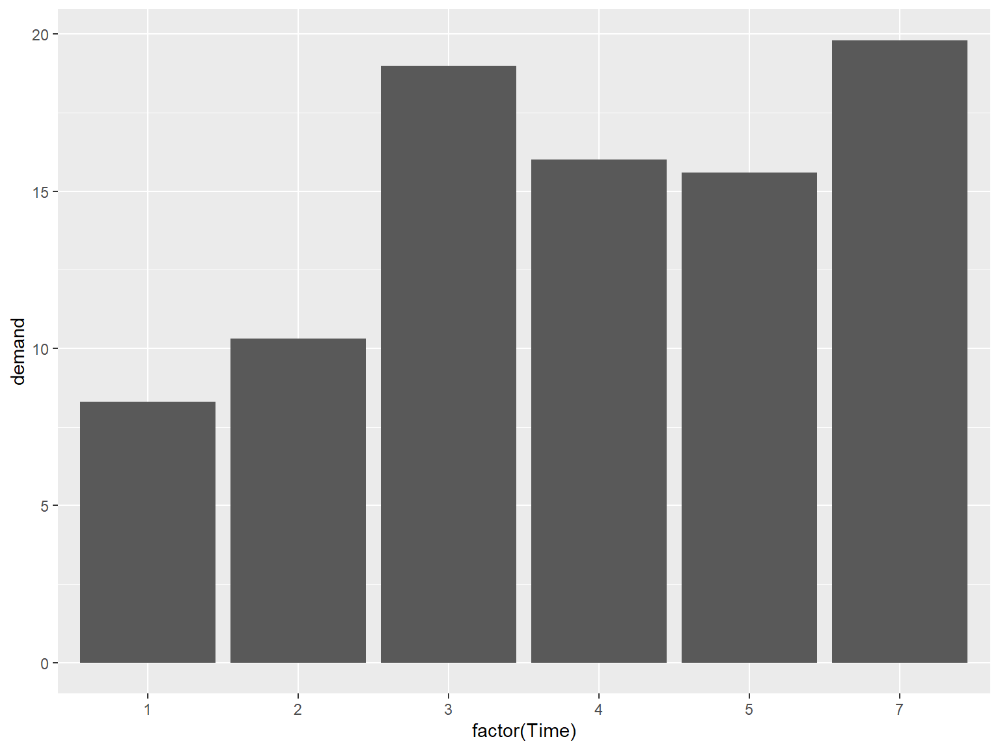
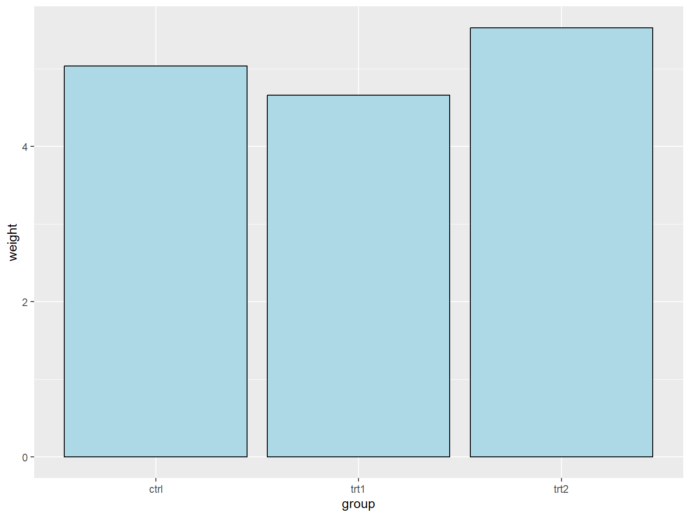
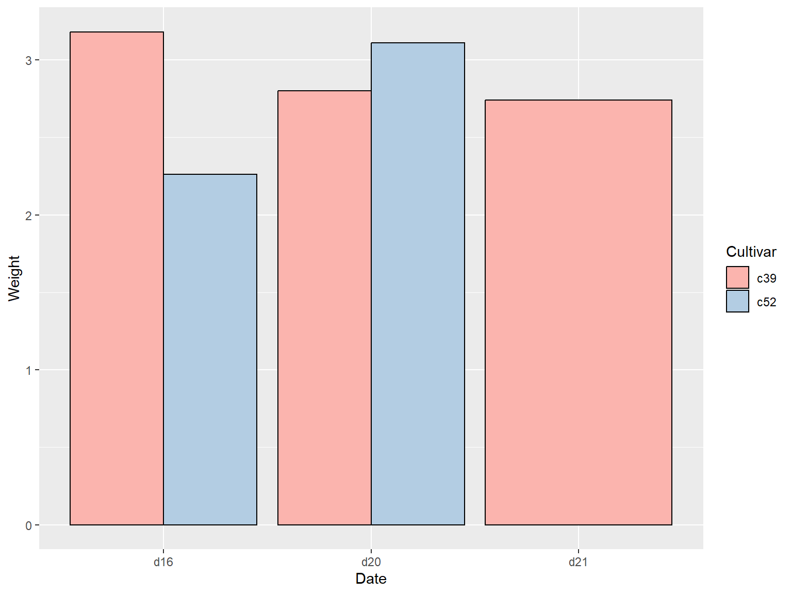
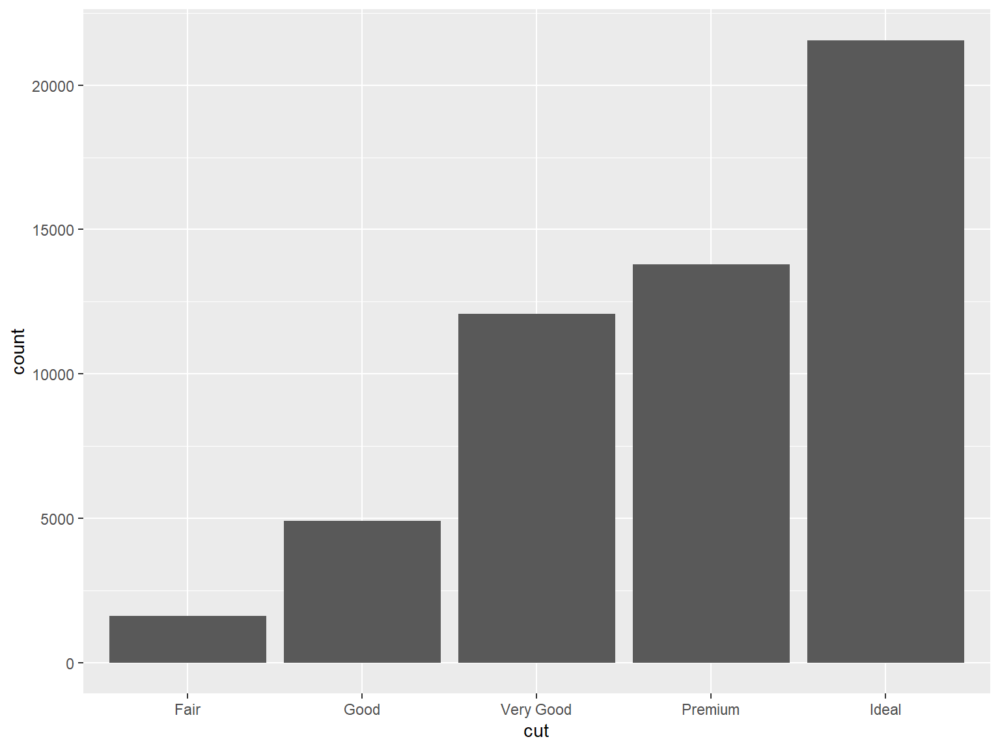
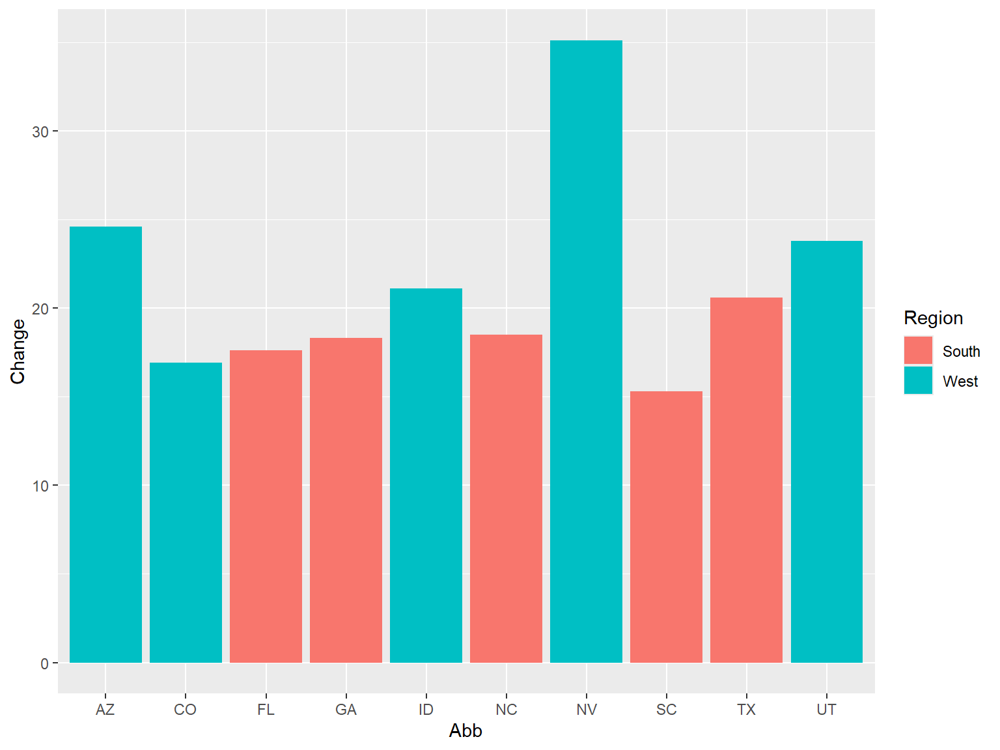
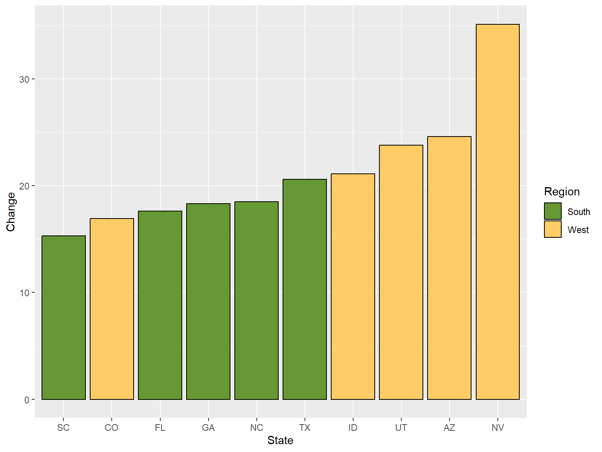
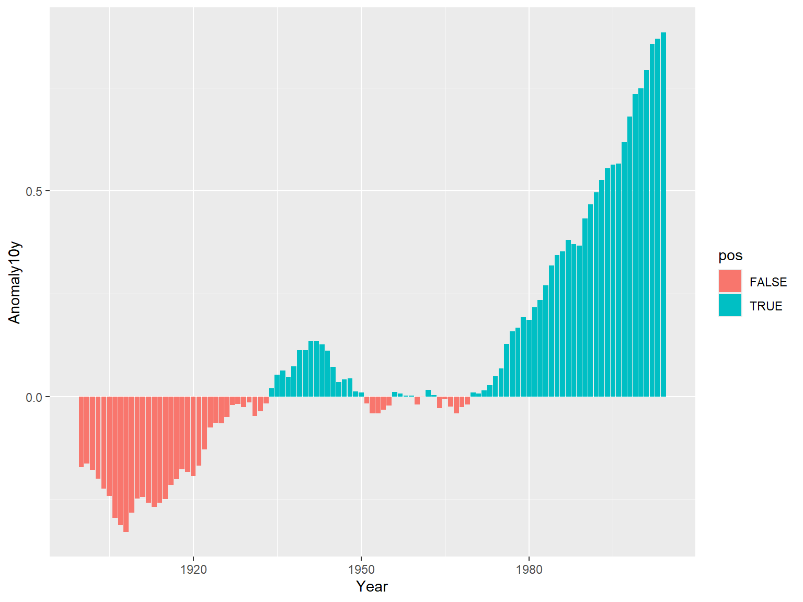
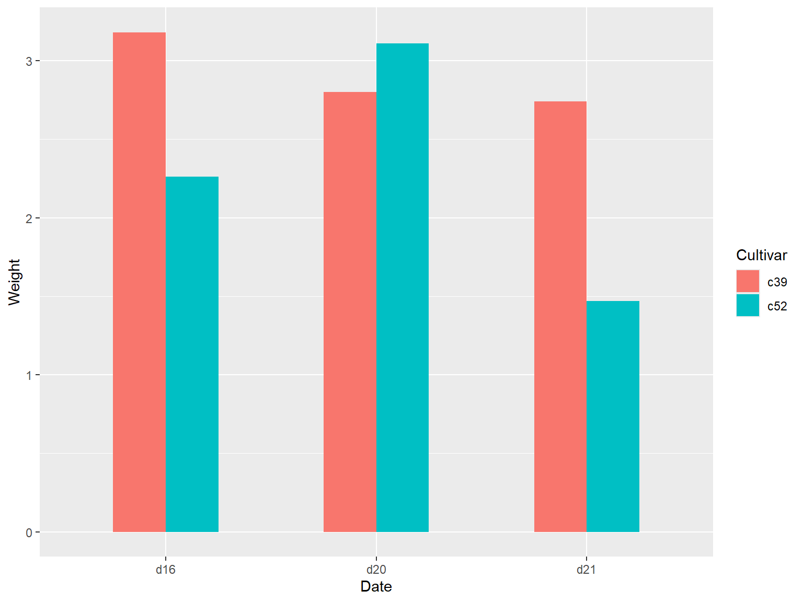
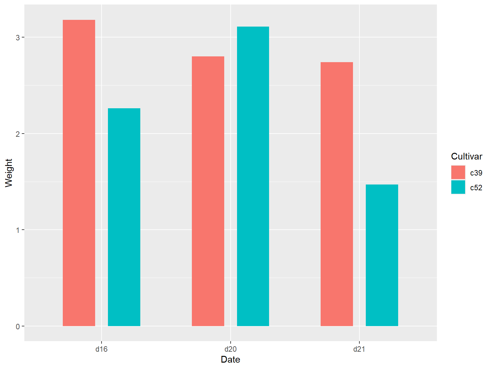
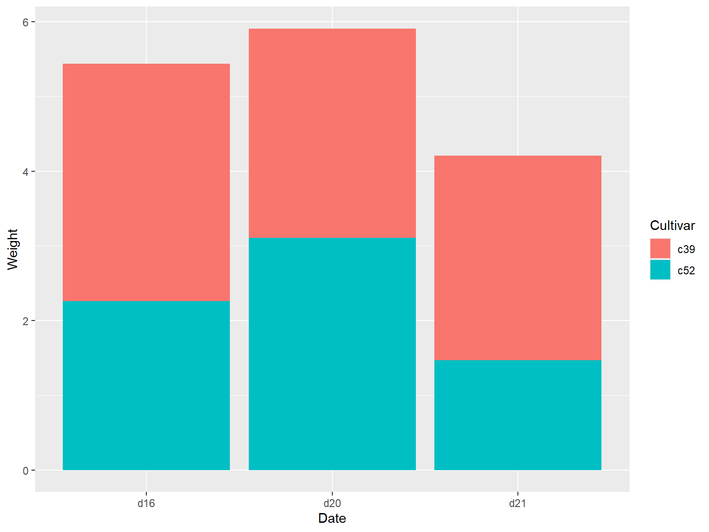

# Convert Time to a discrete (categorical) variable with factor()ggplot(BOD, aes(x =factor(Time), y = demand)) +geom_col()

1.3 调整配色
在默认的设置下，条形图的填充色为深灰色且条形图没有边框线，用户可以通过调整 fill 参数来改变填充色和调整 colour/color 参数为条形图添加边框线。
将填充色设置为浅蓝色，边框现的颜色设置为黑色：
代码
library(gcookbook) # Load gcookbook for the pg_mean data setlibrary(ggplot2)ggplot(pg_mean, aes(x = group, y = weight)) +geom_col(fill ="lightblue",colour ="black")

2 绘制簇状条形图
通过将分类变量映射到 fill 参数上，运行命令 geom_col(position = "dodge") 实现。
代码
library(gcookbook) # Load gcookbook for the cabbage_exp data set# check datasetcabbage_exp
# load ggplot2library(ggplot2)ggplot(ce, aes(x = Date, y = Weight, fill = Cultivar)) +geom_col(position ="dodge", colour ="black") +scale_fill_brewer(palette ="Pastel1")

3 绘制频数条形图
3.1 使用 geom_bar() 函数
使用 geom_bar() 函数，同时不映射任何变量到y参数
代码
# Equivalent to using geom_bar(stat = "bin")ggplot(diamonds, aes(x = cut)) +geom_bar()

3.2 条形图着色
代码
library(gcookbook) # Load gcookbook for the uspopchange data setlibrary(dplyr)# select top 10 state with population growthupc <- uspopchange %>%arrange(desc(Change)) %>%slice(1:10)upc
State Abb Region Change
1 Nevada NV West 35.1
2 Arizona AZ West 24.6
3 Utah UT West 23.8
4 Idaho ID West 21.1
5 Texas TX South 20.6
6 North Carolina NC South 18.5
7 Georgia GA South 18.3
8 Florida FL South 17.6
9 Colorado CO West 16.9
10 South Carolina SC South 15.3
将 Region 映射到 fill 是上兵绘制条形图：
代码
ggplot(upc, aes(x = Abb, y = Change, fill = Region)) +geom_col()

3.2.1 设定图形颜色
借助函数 scale_fill_brewer() or scale_fill_manual() 重新设定图形颜色：
代码
ggplot(upc, aes(x =reorder(Abb, Change), y = Change, fill = Region)) +geom_col(colour ="black") +scale_fill_manual(values =c("#669933", "#FFCC66")) +xlab("State")

3.2.2 注意
颜色的映射是在 aes() 内部完成的，但是颜色的设定是在 aes() 外部完成的。
4 对正负条形图分别着色
首先创建一个取值正负性进行标识的变量 pos :
代码
library(gcookbook) # Load gcookbook for the climate data setlibrary(dplyr)climate_sub <- climate %>%filter(Source =="Berkeley"& Year >=1900) %>%mutate(pos = Anomaly10y >=0)# 展示前10行print("前10行数据：")
[1] "前10行数据："
代码
head(climate_sub, 10)
Source Year Anomaly1y Anomaly5y Anomaly10y Unc10y pos
1 Berkeley 1900 NA NA -0.171 0.108 FALSE
2 Berkeley 1901 NA NA -0.162 0.109 FALSE
3 Berkeley 1902 NA NA -0.177 0.108 FALSE
4 Berkeley 1903 NA NA -0.199 0.104 FALSE
5 Berkeley 1904 NA NA -0.223 0.105 FALSE
6 Berkeley 1905 NA NA -0.241 0.107 FALSE
7 Berkeley 1906 NA NA -0.294 0.106 FALSE
8 Berkeley 1907 NA NA -0.312 0.105 FALSE
9 Berkeley 1908 NA NA -0.328 0.103 FALSE
10 Berkeley 1909 NA NA -0.281 0.101 FALSE
4.1pos 映射到 fill 中
代码
library(ggplot2)ggplot(climate_sub, aes(x = Year, y = Anomaly10y, fill = pos)) +geom_col(position ="identity")

4.1.1 注意
这里条形图的参数设定为 position = "identity" ，可以避免系统因对负值绘制堆积条形而发出的警告信息。
ggplot(cabbage_exp, aes(x = Date, y = Weight, fill = Cultivar)) +geom_col(width =0.5, position ="dodge")

5.4.2 具有条形间距的簇状条形图
代码
ggplot(cabbage_exp, aes(x = Date, y = Weight, fill = Cultivar)) +geom_col(width =0.5, position =position_dodge(0.7))

5.4.3position 语法
以下四条命令是等价的：
geom_bar(position ="dodge")geom_bar(width =0.9, position =position_dodge())geom_bar(position =position_dodge(0.9))geom_bar(width =0.9, position =position_dodge(width=0.9))
6 绘制堆积条形图
6.1 使用 geom_bar() 函数
使用 geom_bar() 函数，并映射一个变量给填充色参数 fill 即可，该命令会将 Date 对应到 x 轴上，并以 Cultivar 作为填充色
代码
library(gcookbook) # Load gcookbook for the cabbage_exp data setlibrary(ggplot2)ggplot(cabbage_exp, aes(x = Date, y = Weight, fill = Cultivar)) +geom_col()

源代码
---title: "03-ggplot2 绘图——条形图"author: "Simonzhou"date: "2025-06-14"date-modified: todayformat: html: code-fold: true code-line-numbers: true code-highlight: true fig_caption: true number-sections: true toc: true toc-depth: 3---# 绘制基本条形图## x 是离散型变量```{r}#| echo: true#| output: true#| cache: true#| fig-show: true # 确保图形显示#| fig-width: 8 # 设置图形宽度#| fig-height: 6 # 设置图形高度library(gcookbook) # Load gcookbook for the pg_mean data setlibrary(ggplot2)ggplot(pg_mean, aes(x = group, y = weight)) +geom_col()```## x 是连续型变量### x 是原数的连续的数值型格式```{r}#| echo: true#| output: true#| cache: true#| fig-show: true # 确保图形显示#| fig-width: 8 # 设置图形宽度#| fig-height: 6 # 设置图形高度# There's no entry for Time == 6BOD# Time is numeric (continuous)str(BOD)#> 'data.frame': 6 obs. of 2 variables:#> $ Time : num 1 2 3 4 5 7#> $ demand: num 8.3 10.3 19 16 15.6 19.8#> - attr(*, "reference")= chr "A1.4, p. 270"ggplot(BOD, aes(x = Time, y = demand)) +geom_col()```### x 转换为因子型变量```{r}#| echo: true#| output: true#| cache: true#| fig-show: true # 确保图形显示#| fig-width: 8 # 设置图形宽度#| fig-height: 6 # 设置图形高度# There's no entry for Time == 6BOD# Convert Time to a discrete (categorical) variable with factor()ggplot(BOD, aes(x =factor(Time), y = demand)) +geom_col()```## 调整配色在默认的设置下，条形图的填充色为深灰色且条形图没有边框线，用户可以通过调整 `fill` 参数来改变填充色和调整 `colour/color` 参数为条形图添加边框线。将填充色设置为浅蓝色，边框现的颜色设置为黑色：```{r}#| echo: true#| output: true#| cache: true#| fig-show: true # 确保图形显示#| fig-width: 8 # 设置图形宽度#| fig-height: 6 # 设置图形高度library(gcookbook) # Load gcookbook for the pg_mean data setlibrary(ggplot2)ggplot(pg_mean, aes(x = group, y = weight)) +geom_col(fill ="lightblue",colour ="black")```# 绘制簇状条形图通过将分类变量映射到 `fill` 参数上，运行命令 `geom_col(position = "dodge")` 实现。```{r}#| echo: true#| output: true#| cache: true#| fig-show: true # 确保图形显示#| fig-width: 8 # 设置图形宽度#| fig-height: 6 # 设置图形高度library(gcookbook) # Load gcookbook for the cabbage_exp data set# check datasetcabbage_exp# load ggplot2library(ggplot2)ggplot(cabbage_exp, aes(x = Date, y = Weight, fill = Cultivar)) +geom_col(position ="dodge")```## `pastel1` 调色盘```{r}#| echo: true#| output: true#| cache: true#| fig-show: true # 确保图形显示#| fig-width: 8 # 设置图形宽度#| fig-height: 6 # 设置图形高度library(gcookbook) # Load gcookbook for the cabbage_exp data set# check datasetcabbage_exp# load ggplot2library(ggplot2)ggplot(cabbage_exp, aes(x = Date, y = Weight, fill = Cultivar)) +geom_col(position ="dodge", colour ="black") +scale_fill_brewer(palette ="Pastel1")```## 缺失项如果分类变量各水平的组合中有缺失项，那么绘图结果中的条形则相应地略去不绘，同时，临近的条形将自动扩充到相应的位置，示例如下：```{r}#| echo: true#| output: true#| cache: true#| fig-show: true # 确保图形显示#| fig-width: 8 # 设置图形宽度#| fig-height: 6 # 设置图形高度library(gcookbook) # Load gcookbook for the cabbage_exp data set# check datasetcabbage_exp# delete last rowce <- cabbage_exp[1:5,]ce# load ggplot2library(ggplot2)ggplot(ce, aes(x = Date, y = Weight, fill = Cultivar)) +geom_col(position ="dodge", colour ="black") +scale_fill_brewer(palette ="Pastel1")```# 绘制频数条形图## 使用 `geom_bar()` 函数使用 `geom_bar()` 函数，同时不映射任何变量到y参数```{r}#| echo: true#| output: true#| cache: true#| fig-show: true # 确保图形显示#| fig-width: 8 # 设置图形宽度#| fig-height: 6 # 设置图形高度# Equivalent to using geom_bar(stat = "bin")ggplot(diamonds, aes(x = cut)) +geom_bar()```## 条形图着色```{r}#| echo: true#| output: true#| cache: true#| fig-show: true # 确保图形显示#| fig-width: 8 # 设置图形宽度#| fig-height: 6 # 设置图形高度library(gcookbook) # Load gcookbook for the uspopchange data setlibrary(dplyr)# select top 10 state with population growthupc <- uspopchange %>%arrange(desc(Change)) %>%slice(1:10)upc```将 Region 映射到 fill 是上兵绘制条形图：```{r}#| echo: true#| output: true#| cache: true#| fig-show: true # 确保图形显示#| fig-width: 8 # 设置图形宽度#| fig-height: 6 # 设置图形高度ggplot(upc, aes(x = Abb, y = Change, fill = Region)) +geom_col()```### 设定图形颜色借助函数 `scale_fill_brewer()` or `scale_fill_manual()` 重新设定图形颜色：```{r}#| echo: true#| output: true#| cache: true#| fig-show: true # 确保图形显示#| fig-width: 8 # 设置图形宽度#| fig-height: 6 # 设置图形高度ggplot(upc, aes(x =reorder(Abb, Change), y = Change, fill = Region)) +geom_col(colour ="black") +scale_fill_manual(values =c("#669933", "#FFCC66")) +xlab("State")```### 注意颜色的映射是在 `aes()` 内部完成的，但是颜色的设定是在 `aes()` 外部完成的。# 对正负条形图分别着色首先创建一个取值正负性进行标识的变量 `pos` :```{r}#| echo: true#| output: true#| cache: true#| fig-show: true # 确保图形显示#| fig-width: 8 # 设置图形宽度#| fig-height: 6 # 设置图形高度library(gcookbook) # Load gcookbook for the climate data setlibrary(dplyr)climate_sub <- climate %>%filter(Source =="Berkeley"& Year >=1900) %>%mutate(pos = Anomaly10y >=0)# 展示前10行print("前10行数据：")head(climate_sub, 10)```## `pos` 映射到 `fill` 中```{r}#| echo: true#| output: true#| cache: true#| fig-show: true # 确保图形显示#| fig-width: 8 # 设置图形宽度#| fig-height: 6 # 设置图形高度library(ggplot2)ggplot(climate_sub, aes(x = Year, y = Anomaly10y, fill = pos)) +geom_col(position ="identity")```### 注意这里条形图的参数设定为 `position = "identity"` ，可以避免系统因对负值绘制堆积条形而发出的警告信息。## 调整配色### `scale_fill_manual()` 参数设定 `scale_fill_manual()` 参数对图形进行调整，设定参数 `guide = FALSE` 可以删除图例；设定边框颜色（color/colour）和边框线宽度（size），这里边框线的单位是毫米。```{r}#| echo: true#| output: true#| cache: true#| fig-show: true # 确保图形显示#| fig-width: 8 # 设置图形宽度#| fig-height: 6 # 设置图形高度ggplot(climate_sub, aes(x = Year, y = Anomaly10y, fill = pos)) +geom_col(position ="identity", colour ="black", size =0.25) +scale_fill_manual(values =c("#CCEEFF", "#FFDDDD"), guide =FALSE)```出现警告信息（Warning messages）调整后：```{r}#| echo: true#| output: true#| cache: true#| fig-show: true # 确保图形显示#| fig-width: 8 # 设置图形宽度#| fig-height: 6 # 设置图形高度ggplot(climate_sub, aes(x = Year, y = Anomaly10y, fill = pos)) +geom_col(position ="identity", colour ="black", linewidth =0.25) +scale_fill_manual(values =c("#CCEEFF", "#FFDDDD"), guide ="none")```# 调整条形宽度和条形间距通过设定 `geom_bar()` 函数的参数 `width` 来使条形变得更宽或更窄，该参数默认函数为 0.9，更大的值会使条形更宽，反之更窄（细）。## 标准宽度```{r}#| echo: true#| output: true#| cache: true#| fig-show: true # 确保图形显示#| fig-width: 8 # 设置图形宽度#| fig-height: 6 # 设置图形高度library(gcookbook) # Load gcookbook for the pg_mean data setlibrary(ggplot2)ggplot(pg_mean, aes(x = group, y = weight)) +geom_col()```## 更窄```{r}#| echo: true#| output: true#| cache: true#| fig-show: true # 确保图形显示#| fig-width: 8 # 设置图形宽度#| fig-height: 6 # 设置图形高度library(gcookbook) # Load gcookbook for the pg_mean data setlibrary(ggplot2)ggplot(pg_mean, aes(x = group, y = weight)) +geom_col(width =0.5)```## 更宽条形宽度的最大宽度值为1.```{r}#| echo: true#| output: true#| cache: true#| fig-show: true # 确保图形显示#| fig-width: 8 # 设置图形宽度#| fig-height: 6 # 设置图形高度library(gcookbook) # Load gcookbook for the pg_mean data setlibrary(ggplot2)ggplot(pg_mean, aes(x = group, y = weight)) +geom_col(width =1)```## 调整组内间距簇状条形图默认组内间距为0，如果希望增加组内间距，可以通过将 `width()` 的值设定的小一些，并将 `position_dodge()` 的值设定大于 `width()` 来实现。### 条形更窄的簇状条形图```{r}#| echo: true#| output: true#| cache: true#| fig-show: true # 确保图形显示#| fig-width: 8 # 设置图形宽度#| fig-height: 6 # 设置图形高度ggplot(cabbage_exp, aes(x = Date, y = Weight, fill = Cultivar)) +geom_col(width =0.5, position ="dodge")```### 具有条形间距的簇状条形图```{r}#| echo: true#| output: true#| cache: true#| fig-show: true # 确保图形显示#| fig-width: 8 # 设置图形宽度#| fig-height: 6 # 设置图形高度ggplot(cabbage_exp, aes(x = Date, y = Weight, fill = Cultivar)) +geom_col(width =0.5, position =position_dodge(0.7))```### `position` 语法以下四条命令是等价的：``` rgeom_bar(position ="dodge")geom_bar(width =0.9, position =position_dodge())geom_bar(position =position_dodge(0.9))geom_bar(width =0.9, position =position_dodge(width=0.9))```# 绘制堆积条形图## 使用 `geom_bar()` 函数使用 `geom_bar()` 函数，并映射一个变量给填充色参数 `fill` 即可，该命令会将 Date 对应到 x 轴上，并以 Cultivar 作为填充色```{r}#| echo: true#| output: true#| cache: true#| fig-show: true # 确保图形显示#| fig-width: 8 # 设置图形宽度#| fig-height: 6 # 设置图形高度library(gcookbook) # Load gcookbook for the cabbage_exp data setlibrary(ggplot2)ggplot(cabbage_exp, aes(x = Date, y = Weight, fill = Cultivar)) +geom_col()```